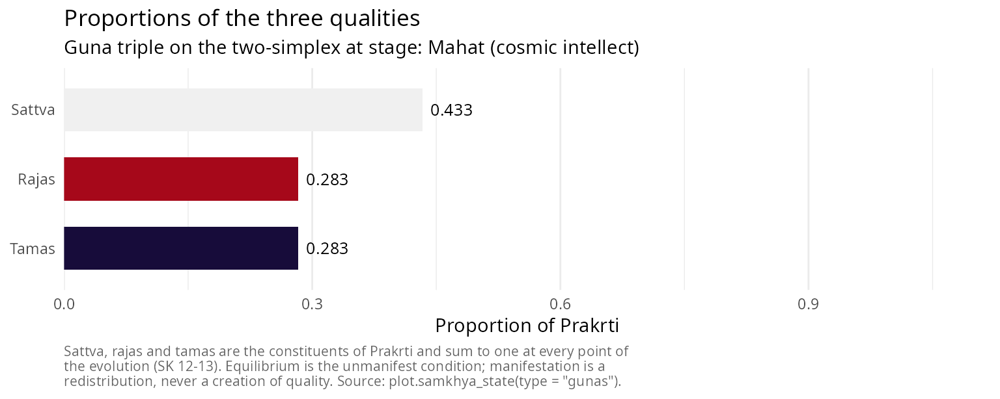
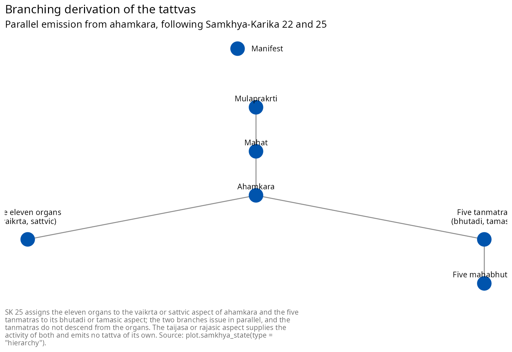

Introduction to Sāṃkhya philosophy: the twenty-five tattvas
Pablo Almaraz, RElab
2026-08-19
Source:vignettes/samkhya_philosophy.Rmd
samkhya_philosophy.RmdSāṃkhya and its sources
Sāṃkhya (सांख्य, “enumeration”) is one of the six orthodox systems (ṣaḍdarśana) of Indian philosophy. It is a dualism of consciousness and matter, an evolutionary cosmology, and a soteriology in which release comes through discriminative knowledge and through nothing else. Tradition ascribes it to the sage Kapila, but the surviving classical statement is the Sāṃkhyakārikā of Īśvarakṛṣṇa, composed in or around the fourth or fifth century CE [2]. Verse 72 counts the work at seventy verses, and the received text transmits seventy-two or seventy-three, the closing verses being transitional; this vignette cites by the standard numbering and writes SK for the text.
The commentarial tradition matters here more than usual, because a great many claims circulated as “Sāṃkhya” belong to the commentators rather than to the kārikā. The Yuktidīpikā, critically edited by Wezler and Motegi [5], is the most philosophically substantial of the commentaries; Gauḍapāda’s Bhāṣya is the most widely read; Vācaspati Miśra’s Tattvakaumudī, of the ninth or tenth century, is the standard scholastic exposition; and Vijñānabhikṣu’s sixteenth-century Sāṃkhyapravacanabhāṣya is a late synthesis that departs from the kārikā on several points, theism among them. Throughout this vignette a claim found in the kārikā is marked with its verse, and a claim found only in a commentary is attributed to the commentator who makes it.
One point of orientation before the doctrine. Classical Sāṃkhya is nirīśvara, without a lord: the kārikā argues for Prakṛti and for Puruṣa and posits no creator, and the theistic readings of the system belong to Vijñānabhikṣu and to the later tradition. The contrast with Pātañjala Yoga, which admits an Īśvara, is treated below.
The three means of valid knowledge
SK 4 admits three means of valid knowledge and three only: dṛṣṭa, what is seen; anumāna, inference; and āptavacana, the word of one who is reliable. Nyāya adds comparison and Mīmāṃsā two more; the restriction to three is deliberate, since the remaining means are held to reduce to these.
samkhya_pramanas()
#> <samkhya_pramana>
#> Three means of valid knowledge, and three only (SK 4)
#>
#> 1. Perception (karika: drsta; commentators: pratyaksa)
#> Determination of each object by the sense proper to it (SK 5)
#> 2. Inference (karika: anumana; commentators: anumana)
#> Threefold, resting on a mark and on the bearer of the mark (SK 5)
#> 3. Reliable testimony (karika: aptavacana; commentators: sabda)
#> The word of one who is reliable; reaches what inference cannot (SK 5-6)
#>
#> Nyaya adds comparison and Mimamsa adds two more; SK 4 restricts to three.The terms most often quoted for the first and third, pratyakṣa and śabda, are Nyāya’s vocabulary adopted by the Sāṃkhya commentators. The kārikā’s own words are dṛṣṭa and āptavacana, and the package reports both columns so that the difference stays visible rather than being quietly harmonised.
The third means carries unusual weight in this system. SK 6 states that what lies beyond the senses is established by inference from the general, and that what even inference cannot reach is established by reliable testimony. Prakṛti and Puruṣa are not objects of perception, so the whole ontology rests on the second and third means, and the kārikā is candid about it.
The effect pre-exists in its cause
Before any enumeration, the causal doctrine. SK 9 argues that the effect exists in its material cause before it is produced, which is satkāryavāda.
satkaryavada()
#> <samkhya_satkarya>
#> Satkaryavada: the effect exists in its cause before production (SK 9)
#>
#> 1. asadakaranat
#> Because there is no making of what is not
#> Production out of nothing is not production
#> 2. upadanagrahanat
#> Because a material cause is resorted to
#> The potter takes clay, not milk, to make a pot
#> 3. sarvasambhavabhavat
#> Because there is no arising of everything from everything
#> Oil comes from sesame and not from sand
#> 4. saktasya sakyakaranat
#> Because what is capable produces what it is capable of
#> A capacity is a capacity for something determinate
#> 5. karanabhavat
#> Because the effect is of the nature of the cause
#> Cloth is not other than the threads that constitute it
#>
#> Transformation is real (parinama), not apparent (vivarta).Nothing in the evolutionary sequence makes sense without this. If the effect did not already exist in the cause, the twenty-three evolutes would be additions to Prakṛti rather than manifestations of what she already contains, and the inference of SK 15 and 16 from the finitude and the homogeneity of the manifest back to a single unmanifest cause would not go through. Transformation in Sāṃkhya is real, pariṇāma: the effect is a genuine modification of the cause. This separates the system from the vivarta of Advaita Vedānta, in which the effect is an appearance that leaves the cause untouched, and from the asatkāryavāda of Nyāya-Vaiśeṣika, in which the effect is a genuinely new entity [4].
The two principles
Puruṣa
Puruṣa (पुरुष) is consciousness. SK 17 gives five arguments for its existence: because an aggregate exists for the sake of another; because there must be something that is the reverse of what is constituted by the three qualities; because there must be a superintendent; because there must be an experiencer, bhoktṛbhāvāt; and because there is activity directed towards isolation. SK 18 establishes plurality on three grounds, and not on one: the several determination of birth, death and the organs; the non-simultaneity of activity, ayugapatpravṛtteḥ; and difference in the proportion of the three qualities.
SK 19 gives the character of Puruṣa in a single line: witnesshood, isolation, neutrality, spectatorship and non-agency. Two of these deserve emphasis, because each is regularly overstated in one direction or the other.
Puruṣa is akartṛ, never an agent. It is not, however, abhoktṛ: SK 17 argues for its existence precisely from the requirement of an experiencer, and SK 19 denies agency alone. The resolution is SK 37, which assigns to buddhi the work of presenting everything to Puruṣa for experience. Experience is for Puruṣa while every modification involved in it occurs in Prakṛti; to deny that Puruṣa is an experiencer is to remove the argument of SK 17, and to make it an agent is to contradict SK 19.
Kaivalya, isolation, appears in SK 19 as a standing characteristic and not as an achievement. Puruṣa is already isolated. What is attained at the end of the system is therefore not a property Puruṣa lacked; it is the cessation of an activity of Prakṛti’s. The point governs the whole treatment of liberation below.
Puruṣa does not act on Prakṛti. Its mere presence suffices, and SK 21 illustrates the conjunction with the image of a lame man and a blind man, who cooperate to their mutual benefit without either becoming the other. The simile of the magnet drawing iron without itself moving, often quoted at this point, belongs to the commentaries and to the Sāṃkhyasūtra, not to the kārikā.
Prakṛti
Prakṛti (प्रकृति) is the unconscious material principle, also called pradhāna, the primary, and avyakta, the unmanifest. SK 3 states her structural position in one word, avikṛti: she is uncreated, the root that is not itself an effect of anything.
SK 10 contrasts the manifest with the unmanifest in ten respects, the manifest being caused, non-eternal, non-pervasive, active, plural, dependent, mergent, composite and subordinate, and the unmanifest the reverse in each. SK 11 adds what the two share, namely that both are constituted by the three qualities, non-discriminating, objective, common, unconscious and productive, and that Puruṣa is the reverse of this while resembling the unmanifest in some of the respects of SK 10.
That last clause is where a common error enters. Because SK 11 likens Puruṣa to the unmanifest in certain respects, secondary accounts sometimes group Puruṣa and Prakṛti together as two “unmanifest principles”. The grouping does not survive SK 2 and SK 3, which give three categories, vyakta, avyakta and jña, the manifest, the unmanifest and the knower, and which place Puruṣa outside the causal series altogether as na prakṛtir na vikṛtiḥ, neither cause nor effect. Avyakta denotes mūlaprakṛti alone. The enumeration below follows SK 3.
The unity of Prakṛti is argued at SK 15, from the finitude of particular things, from homogeneity, from evolution through causal power, from the separation of cause and effect, and from the non-separateness of the whole world; it is not asserted at SK 11.
The three qualities
SK 12 gives the three qualities as having the nature of pleasure, pain and dejection, prītyaprītiviṣādātmakāḥ, and as having illumination, activity and restraint for their purposes, prakāśapravṛttiniyamārthāḥ. It then names four relations they bear one another, in a single compound: anyonyābhibhavāśrayajananamithunavṛttayaḥ. They mutually dominate, mutually depend, mutually produce and mutually consort.
The first of these four is worth dwelling on, because it is routinely mistranslated. Abhibhava is overpowering or suppression. Rendering the compound as “mutual support” keeps āśraya and silently drops abhibhava, which reverses the sense of the leading term: the qualities are as much in contention as in cooperation, and it is their contention that drives manifestation at all.
SK 13 gives their properties: sattva is light and illuminating, laghu prakāśakam; rajas is stimulating and mobile, upaṣṭambhakaṃ calam; tamas is heavy and enveloping, guru varaṇakam.
| Quality | SK 12 nature | SK 12 purpose | SK 13 properties |
|---|---|---|---|
| sattva (सत्त्व) | prīti, pleasure | prakāśa, illumination | light, illuminating |
| rajas (रजस्) | aprīti, pain | pravṛtti, activity | stimulating, mobile |
| tamas (तमस्) | viṣāda, dejection | niyama, restraint | heavy, enveloping |
Two familiar schemes are absent from this table on purpose. The association of the three qualities with the colours white, red and black comes from Śvetāśvatara Upaniṣad 4.5 and the Purāṇic material that follows it, not from the kārikā. The association with upward, horizontal and downward tendency comes from Bhagavadgītā 14.18, which is in any case a statement about the destinies of persons rather than about the qualities as such. Both are perfectly respectable pieces of Indian thought and neither is Sāṃkhyakārikā 12 or 13; presenting them under that citation is a misattribution, and it is common enough to be worth naming.
In the unmanifest condition the three stand in equilibrium, a condition the later tradition calls sāmyāvasthā; the term is Vācaspati’s and the Sāṃkhyasūtra’s rather than the kārikā’s. Because the three are proportions of one substance, they sum to one, and manifestation is a redistribution among them rather than an increase in any. The package enforces that invariant at every step.
state <- init_prakriti()
state$gunas
#> sattva rajas tamas
#> 0.3333333 0.3333333 0.3333333
sum(state$gunas)
#> [1] 1The twenty-five tattvas
SK 3 partitions the twenty-five principles four ways: mūlaprakṛti is uncreated; seven are at once effects and causes; sixteen are effects only; and Puruṣa is neither. The package carries the enumeration as a data object, and every table, diagram and method in it derives from that object, so the numbering cannot drift between them.
| Class | Sense | Members | n |
|---|---|---|---|
| avikṛti | Uncreated root | mūlaprakṛti | 1 |
| prakṛti-vikṛti | Effect and cause both | mahat, ahaṃkāra, the five tanmātras | 7 |
| vikāra | Effect only | the eleven organs, the five gross elements | 16 |
| na prakṛtir na vikṛtiḥ | Neither cause nor effect | puruṣa | 1 |
The arithmetic is 1 + 7 + 16 + 1 = 25, and one consequence of it is worth stating explicitly because it is so often got wrong. Prakṛti has twenty-three evolutes, not twenty-four. Mūlaprakṛti is not an evolute of herself, and Puruṣa is not an evolute at all.
The numbering used throughout counts the twenty-four material principles from mūlaprakṛti (1) to pṛthivī (24) and makes Puruṣa the twenty-fifth, pañcaviṃśa, which is the enumeration presupposed by the commentators and by the Mokṣadharma.
| # | IAST | Devanāgarī | Gloss | SK |
|---|---|---|---|---|
| 1 | mūlaprakṛti | मूलप्रकृति | Primordial nature, unmanifest and uncaused | 3, 10-11, 15-16 |
| 2 | mahat | महत् | The great one, cosmic intellect | 3, 22-23 |
| 3 | ahaṃkāra | अहंकार | The I-maker, principle of self-appropriation | 3, 22, 24 |
| 4 | manas | मनस् | Mind, the eleventh organ | 25, 27 |
| 5 | śrotra | श्रोत्र | Ear, organ of hearing | 25, 26, 28 |
| 6 | tvac | त्वच् | Skin, organ of touch | 25, 26, 28 |
| 7 | cakṣus | चक्षुस् | Eye, organ of sight | 25, 26, 28 |
| 8 | rasanā | रसना | Tongue, organ of taste | 25, 26, 28 |
| 9 | ghrāṇa | घ्राण | Nose, organ of smell | 25, 26, 28 |
| 10 | vāc | वाच् | Speech | 25, 26, 28 |
| 11 | pāṇi | पाणि | Grasping | 25, 26, 28 |
| 12 | pāda | पाद | Locomotion | 25, 26, 28 |
| 13 | pāyu | पायु | Excretion | 25, 26, 28 |
| 14 | upastha | उपस्थ | Generation | 25, 26, 28 |
| 15 | śabda | शब्द | Sound as bare essence | 25, 38 |
| 16 | sparśa | स्पर्श | Touch as bare essence | 25, 38 |
| 17 | rūpa | रूप | Form as bare essence | 25, 38 |
| 18 | rasa | रस | Taste as bare essence | 25, 38 |
| 19 | gandha | गन्ध | Smell as bare essence | 25, 38 |
| 20 | ākāśa | आकाश | Space | 22, 38 |
| 21 | vāyu | वायु | Air | 22, 38 |
| 22 | tejas | तेजस् | Fire | 22, 38 |
| 23 | ap | अप् | Water | 22, 38 |
| 24 | pṛthivī | पृथिवी | Earth | 22, 38 |
| 25 | puruṣa | पुरुष | Pure consciousness, the witness | 3, 11, 17-19 |
The internal organ is threefold
SK 33 defines the internal organ, antaḥkaraṇa, as threefold: buddhi, ahaṃkāra and manas, with the ten organs external to it. Manas therefore belongs to two classifications at once, and the package keeps them apart with two columns, because conflating them produces the frequent error of labelling a two-member group “the antaḥkaraṇa”.
subset(tattvas, antahkarana, select = c(index, iast, group, ekadasaka))
#> index iast group ekadasaka
#> 2 2 mahat buddhi FALSE
#> 3 3 ahaṃkāra ahamkara FALSE
#> 4 4 manas manas TRUECausally manas is one of the eleven that issue from ahaṃkāra (SK 25); functionally it is one of the three that constitute the internal organ (SK 33). Both are true, and neither reduces to the other.
The derivation branches
SK 22 gives the order: from Prakṛti, mahat; from that, ahaṃkāra; from that, the set of sixteen; and from five of those sixteen, the five gross elements. SK 25 gives what the order alone leaves out, namely that ahaṃkāra emits along two different aspects at once:
sāttvika ekādaśakaḥ pravartate vaikṛtād ahaṃkārāt bhūtādes tanmātraḥ sa tāmasas taijasād ubhayam
The elevenfold set proceeds from the sattvic aspect, called vaikṛta; the tanmātras proceed from the tamasic, called bhūtādi; and both proceed from the rajasic, called taijasa, in the sense that the rajasic aspect supplies the activity by which either proceeds at all and emits no principle of its own.
subset(tattvas, !is.na(guna_aspect), select = c(index, iast, group, guna_aspect)) |>
transform(guna_aspect = factor(guna_aspect)) |>
(\(d) table(d$group, d$guna_aspect))()
#>
#> bhutadi vaikrta
#> jnanendriya 0 5
#> karmendriya 0 5
#> manas 0 1
#> tanmatra 5 0Two consequences follow, and both are contradicted by a large fraction of the diagrams in circulation.
The organs of action are sattvic in origin. The elevenfold set of SK 25 is manas together with the five organs of knowledge and the five organs of action, all eleven from the vaikṛta aspect. Assigning the organs of action to a tamasic or a rajasic branch, as is often done to make the diagram symmetrical, contradicts the verse.
The tanmātras do not descend from the organs. They are the other branch, issuing from ahaṃkāra directly. A diagram that routes the organs of knowledge or of action into the tanmātras inverts the derivation. In this package the two branches are genuinely parallel, and a state carrying ahaṃkāra with no organ whatever is a legitimate argument to the function that manifests the tanmātras.
ahamkara_only <- init_prakriti() |>
evolution_buddhi(verbose = FALSE) |>
evolution_ahamkara(verbose = FALSE)
# The tamasic branch proceeds with the sattvic branch entirely empty.
tanmatras_first <- evolution_tanmatras(ahamkara_only, verbose = FALSE)
summary(tanmatras_first)$branches
#> vaikrta bhutadi
#> 0 5The organs and their function
SK 26 names the five organs of knowledge and the five of action. SK 28 gives their function, and it is the sharpest thing the kārikā says about perception: the function of the five organs of knowledge with respect to sound and the rest is ālocanamātra, bare apprehension and nothing more. The five actions are speech, grasping, movement, excretion and pleasure.
| # | IAST | Devanāgarī | Gloss | Class |
|---|---|---|---|---|
| 5 | śrotra | श्रोत्र | Ear, organ of hearing | jnanendriya |
| 6 | tvac | त्वच् | Skin, organ of touch | jnanendriya |
| 7 | cakṣus | चक्षुस् | Eye, organ of sight | jnanendriya |
| 8 | rasanā | रसना | Tongue, organ of taste | jnanendriya |
| 9 | ghrāṇa | घ्राण | Nose, organ of smell | jnanendriya |
| 10 | vāc | वाच् | Speech | karmendriya |
| 11 | pāṇi | पाणि | Grasping | karmendriya |
| 12 | pāda | पाद | Locomotion | karmendriya |
| 13 | pāyu | पायु | Excretion | karmendriya |
| 14 | upastha | उपस्थ | Generation | karmendriya |
Bare apprehension is not judgement. SK 29 and 30 distribute the remaining work: buddhi determines, ahaṃkāra appropriates, manas constructs, and the three together with the relevant organ operate now successively and now simultaneously. SK 35 makes buddhi the doorkeeper and the other organs the doors, and SK 36 has all of them presenting the whole to buddhi, which in turn presents everything to Puruṣa. This division of labour, rather than any theory of the senses as judging faculties, is what distinguishes the Sāṃkhya account of cognition.
The organs of knowledge are listed here in the order ear, skin, eye, tongue, nose, which aligns each with its corresponding subtle and gross element. SK 26’s own order is eye, ear, nose, tongue, skin. The divergence is one of presentation and not of doctrine, and one ordering is used throughout the package so that its tables, diagrams and vignettes cannot disagree with one another.
The subtle and the gross elements
SK 38 reads:
tanmātrāṇy aviśeṣās tebhyo bhūtāni pañca pañcabhyaḥ ete smṛtā viśeṣāḥ śāntā ghorāś ca mūḍhāś ca
The tanmātras are the non-specific; from those five arise the five elements; and these, the specific, are held to be tranquil, turbulent and deluding. The predication of śānta, ghora and mūḍha falls on the gross elements. A widespread rendering instead has SK 38 describe the tanmātras as neither soothing nor tormenting nor stupefying, which reverses the relatum and borrows the triple prīti, aprīti, viṣāda from SK 12, where it characterises the three qualities. The negative characterisation of the tanmātras is a commentarial inference; the verse states the positive characterisation of the gross elements.
A second attribution needs the same care. The scheme by which each gross element accumulates the qualities of those before it, so that space carries sound alone and earth carries all five, is not in SK 22 or anywhere else in the kārikā. Within Sāṃkhya it is Vijñānabhikṣu’s position; Vācaspati Miśra holds instead that each gross element arises from its own tanmātra alone, and that one-to-one derivation is what this package records [3]. Outside Sāṃkhya the accumulation scheme is Vedāntic and Purāṇic and belongs with pañcīkaraṇa. It is a live disagreement in the tradition, and flattening it into a citation of SK 22 loses both positions.
| # | IAST | Devanāgarī | Gloss | Material cause |
|---|---|---|---|---|
| 15 | śabda | शब्द | Sound as bare essence | ahaṃkāra |
| 16 | sparśa | स्पर्श | Touch as bare essence | ahaṃkāra |
| 17 | rūpa | रूप | Form as bare essence | ahaṃkāra |
| 18 | rasa | रस | Taste as bare essence | ahaṃkāra |
| 19 | gandha | गन्ध | Smell as bare essence | ahaṃkāra |
| 20 | ākāśa | आकाश | Space | śabda |
| 21 | vāyu | वायु | Air | sparśa |
| 22 | tejas | तेजस् | Fire | rūpa |
| 23 | ap | अप् | Water | rasa |
| 24 | pṛthivī | पृथिवी | Earth | gandha |
Simulating the evolution
The whole branching sequence runs in one call, or step by step.
manifested <- samkhya_evolve(guna_dominant = "sattva", verbose = FALSE)
manifested
#> <samkhya_state>
#> Stage: Mahabhutas (the specific)
#> Gunas: sattva = 0.433, rajas = 0.283, tamas = 0.283 (sum = 1.000)
#> Evolutes manifest: 23 of 23
#> Cognitive situation: Visesa (the specific): the gross world stands manifest
#> Viveka in buddhi: Not attained
#> Prakrti acting for this Purusha: Yes
#> Purusha: Witness, neutral, non-agent; neither bound nor released (SK 19, 62)The summary reports the structural partition, the state of the two branches, the threefold internal organ and the subtle body.
summary(manifested)
#> <summary.samkhya_state>
#>
#> Stage: Mahabhutas (the specific)
#> Cognitive situation: Visesa (the specific): the gross world stands manifest
#>
#> Qualities of Prakrti (SK 12-13)
#> Sattva = 0.4333 Rajas = 0.2833 Tamas = 0.2833 Sum = 1.0000
#>
#> Structural partition of what has manifested (SK 3)
#> Avikriti, uncreated root : 1 of 1
#> Prakriti-vikriti, effect and cause both : 7 of 7
#> Vikara, effect only : 16 of 16
#> Evolutes of Prakrti manifest : 23 of 23
#>
#> Branches issuing from ahamkara (SK 25)
#> Vaikrta, sattvic: the eleven organs : 11 of 11
#> Bhutadi, tamasic: the five tanmatras : 5 of 5
#> Taijasa, rajasic: supplies activity to both, issues no tattva
#>
#> Internal organ, threefold (SK 33): mahat, ahaṃkāra, manas
#> Subtle body, eighteenfold (SK 40): 18 of 18 constituents
#>
#> Viveka in buddhi: Not attained
#> Prakrti acting for this Purusha: Yes
#> Purusha: Unchanged throughout; neither bound nor released (SK 62)Because the branches are parallel, the order in which they are taken does not matter, and the two orders give the same result.
vaikrta_first <- ahamkara_only |>
evolution_manas(verbose = FALSE) |>
evolution_indriyas(verbose = FALSE) |>
evolution_tanmatras(verbose = FALSE) |>
evolution_mahabhutas(verbose = FALSE)
bhutadi_first <- ahamkara_only |>
evolution_tanmatras(verbose = FALSE) |>
evolution_mahabhutas(verbose = FALSE) |>
evolution_manas(verbose = FALSE) |>
evolution_indriyas(verbose = FALSE)
setequal(vaikrta_first$tattvas, bhutadi_first$tattvas)
#> [1] TRUEThe causal order within a branch, by contrast, is not optional: nothing manifests before its material cause.
evolution_mahabhutas(ahamkara_only)
#> Error:
#> ! The gross elements cannot evolve: the material cause is not yet manifest (śabda, sparśa, rūpa, rasa, gandha missing).The subtle body
SK 39 distinguishes the subtle bodies from those born of mother and father and from the gross elements, and SK 40 defines the subtle body as arisen before, unattached, constant, and extending from mahat to the subtle ones. That is eighteen constituents: mahat, ahaṃkāra, the eleven organs and the five tanmātras.
linga_sharira(manifested)
#> <samkhya_linga>
#> Subtle body, linga-sarira and suksma-sarira being one thing (SK 39-40)
#>
#> buddhi Mahat
#> ahamkara Ahamkara
#> manas Manas
#> jnanendriya Shrotra, Tvac, Chakshus, Rasana, Ghrana
#> karmendriya Vac, Pani, Pada, Payu, Upastha
#> tanmatra Shabda, Sparsha, Rupa, Rasa, Gandha
#>
#> Constituents: 18
#> Manifest in this state: 18 of 18
#> The gross elements are excluded: they constitute the gross body, which perishes.Liṅga-śarīra and sūkṣma-śarīra are two names for this one aggregate. Accounts that make them designate two different bodies, one running from buddhi to the tanmātras and another consisting of buddhi, ahaṃkāra and manas, split a single term of the kārikā in two and contradict SK 40. The gross elements are not constituents of it: the subtle body transmigrates, and the gross body perishes.
SK 41 gives the reason it must exist, in an image: as a picture cannot stand without a support, nor a shadow without a post, so the subtle marks cannot subsist without a specific substratum. SK 42 gives its purpose, that it plays its part for the sake of Puruṣa like an actor taking on a role.
The dispositions of buddhi
SK 23 assigns buddhi eight dispositions, four sattvic and four their reverse, and SK 43 to 51 build on them the fiftyfold intellectual creation.
buddhi_bhavas()
#> <samkhya_bhava>
#> Eight dispositions of buddhi (SK 23, 43-45)
#>
#> Sattvic form
#> dharma Virtue Ascent to the higher worlds (SK 44)
#> jnana Knowledge Release (SK 44)
#> viraga Dispassion Dissolution into Prakrti (SK 45)
#> aisvarya Mastery Non-obstruction (SK 45)
#> Tamasic form
#> adharma Vice Descent to the lower worlds (SK 44)
#> ajnana Ignorance Bondage (SK 44)
#> raga Attachment Transmigration (SK 45)
#> anaisvarya Impotence Obstruction (SK 45)
#>
#> Intellectual creation, fiftyfold (SK 46-51)
#> viparyaya Misconception 5 tamas, moha, mahamoha, tamisra, andhatamisra (SK 47-48)
#> asakti Incapacity 28 Injuries of the eleven organs and seventeen failures of buddhi (SK 49)
#> tusti Contentment 9 Four internal and five external (SK 50)
#> siddhi Attainment 8 Reasoning, hearing, study, three suppressions of pain, and two more (SK 51)
#> Total 50
#>
#> The five misconceptions are not the five afflictions of Yoga-sutra 2.3;
#> that identification belongs to the commentators, not to the karika.Two things in that output correct claims that circulate widely. The reverse of virāga, dispassion, is rāga, attachment; SK 23 says the tamasic form is the reverse of the sattvic, tāmasam asmād viparyastam, and the form avairāgya that appears in many secondary accounts is a coinage that negates the abstract noun instead of the disposition.
And the five viparyayas of SK 47 and 48 are tamas, moha, mahāmoha, tāmisra and andhatāmisra. They are not the five afflictions of Yogasūtra 2.3, avidyā, asmitā, rāga, dveṣa and abhiniveśa. The identification of the two lists is made by the commentators, Vācaspati among them, and it is a defensible piece of exegesis; it is not what the kārikā says, and citing SK 47 for avidyā attributes to Īśvarakṛṣṇa a list he does not give.
SK 44 states what the dispositions effect, and the second clause is the hinge of the whole system: jñānena cāpavargo viparyayād iṣyate bandhaḥ, by knowledge there is release, and by its reverse, bondage.
Prakṛti acts for another
The teleology is the strangest and the most characteristic part of the system, and it is what makes the ending intelligible. SK 21 states the purpose of the conjunction: the seeing of Prakṛti by Puruṣa, and the isolation of Puruṣa. SK 31 has the organs performing their own functions moved by mutual impulse, the motive being the purpose of Puruṣa and nothing else. SK 56 and 57 press the difficulty and answer it: this evolution, from mahat to the specific elements, is brought about by Prakṛti for the release of each Puruṣa, for another’s sake though it looks like her own; and as the unknowing milk functions for the nourishment of the calf, so Prakṛti functions for the release of Puruṣa.
That is the point of the analogy. Purposiveness in Sāṃkhya does not require a purposer. Prakṛti is unconscious throughout and there is no Īśvara directing her; the teleology is built into her constitution as the nourishing function is built into milk. SK 60 calls her the benefactress endowed with the qualities who accomplishes by manifold means, without benefit to herself, the purpose of one who is devoid of qualities and confers no benefit. SK 61 calls her the most delicate of beings, who having once been seen with the thought “I have been seen” never comes again into the sight of that Puruṣa.
Kaivalya
Everything above converges on SK 62, which is the verse most often lost in computational and popular treatments alike:
tasmān na badhyate ’ddhā na mucyate nāpi saṃsarati kaścit saṃsarati badhyate mucyate ca nānāśrayā prakṛtiḥ
Therefore no one is bound, no one is released, and no one transmigrates; it is Prakṛti, in her manifold supports, who transmigrates, is bound and is released.
Puruṣa was never bound, so Puruṣa does not become free. What arises is discriminative knowledge, and it arises in buddhi. SK 64 gives its content: from the repeated practice of the principles there arises the knowledge “I am not, nothing is mine, I am not an I”, nāsmi na me nāham, which is complete because free from error, pure and absolute.
final <- get_kaivalya(manifested, verbose = FALSE)
final$viveka
#> [1] TRUE
final$prakriti_active
#> [1] FALSEAnd Puruṣa is returned exactly as it was, which is the design decision the verse forces:
identical(final$purusha, manifested$purusha)
#> [1] TRUESK 59 gives the image for what does change: as a dancer withdraws from the stage having shown herself to the audience, so Prakṛti withdraws having shown herself to Puruṣa. SK 66 states the situation after the withdrawal, that the one has ceased to look and the other has ceased to display, and though the conjunction persists there is no further motive for creation.
Embodiment does not stop at the moment of knowledge. SK 67 says that the body continues by the momentum of impressions already acquired, as a potter’s wheel goes on turning after the potter has stopped pushing it. Only at the separation from the body, Prakṛti’s purpose being accomplished, is isolation attained both certainly and finally, aikāntikam ātyantikam (SK 68). The package records the distinction.
c(embodied = get_kaivalya(manifested, jivanmukti = TRUE, verbose = FALSE)$mental_state,
final = get_kaivalya(manifested, jivanmukti = FALSE, verbose = FALSE)$mental_state)
#> embodied
#> "Viveka attained; the body persists by momentum (SK 67)"
#> final
#> "Viveka attained; isolation certain and final (SK 68)"The state is neither annihilation nor absorption into anything. It is the recognition of a distinction that always obtained.
Sāṃkhya and Yoga
Pātañjala Yoga takes over most of the Sāṃkhya ontology, and the two are conventionally paired as theory and practice. The pairing is useful and it obscures three real differences, each of which Larson treats at length [2] and Burley re-examines [4].
Yoga admits an Īśvara, a special Puruṣa untouched by affliction, action and its residue (YS 1.24). The kārikā admits none. This is the sharpest divergence, and it is why the two systems are distinguished in the doxographies as nirīśvara and seśvara Sāṃkhya.
Yoga’s path is eightfold and practical (YS 2.29), and its central technical notion, vivekakhyāti, the unbroken discriminative discernment named at YS 2.26 as the means of removal, is a Yoga term. The kārikā speaks of jñāna and of viveka and does not use vivekakhyāti; the term is imported into expositions of Sāṃkhya so routinely that it is worth flagging, though nothing doctrinal turns on it.
Yoga’s account of what obstructs is the five afflictions of YS 2.3; Sāṃkhya’s is the fivefold viparyaya of SK 47 and 48, discussed above. Eliade [9] and Feuerstein [10] treat the Yoga side; Halbfass [8] is the standard account of how both were received in European philosophy, often through exactly the conflations this vignette has been separating.
Guṇa dynamics
Which quality predominates when the equilibrium breaks changes the character of the manifestation without changing its structure.
states <- lapply(c("sattva", "rajas", "tamas"), function(g)
evolution_buddhi(init_prakriti(), guna_dominant = g, verbose = FALSE))
sapply(states, function(s) s$gunas)
#> [,1] [,2] [,3]
#> sattva 0.4333333 0.2833333 0.2833333
#> rajas 0.2833333 0.4333333 0.2833333
#> tamas 0.2833333 0.2833333 0.4333333
# The three remain proportions of one substance at every point.
sapply(states, function(s) sum(s$gunas))
#> [1] 1 1 1
The derivation as a diagram
The diagram is generated from the enumeration rather than written by hand, so it cannot come to disagree with the tables above. The two aspects of ahaṃkāra are drawn as two enclosed branches, because their parallelism is the whole point of SK 25 and the thing most often lost in diagrams of this system.
Colour encodes the quality that predominates: pale for the sattvic branch, dark for the tamasic, red for the rajasic aspect that drives both and emits nothing. Puruṣa is drawn uncoloured and outside the sequence, joined to it by a broken edge, because it is nirguṇa, constituted by none of the three, and because SK 3 places it outside the causal series as neither cause nor effect. Kaivalya carries no number: the twenty-fifth principle is Puruṣa, and kaivalya is a condition, not a tattva.
mermaid(create_samkhya_flowchart(), height = 620)The detailed form names every principle in each group and gives its index range.
mermaid(create_samkhya_flowchart_detailed(), height = 680)The plot method draws the same derivation as a static figure, shading what has so far manifested in a given state.

Conclusion
Sāṃkhya sets out a structure of reality by enumeration, an account of suffering by misidentification, and a path out of it by discrimination alone. Its interest for a modern reader lies less in its cosmology than in the discipline with which it separates the witness from everything witnessed, and in its willingness to locate agency, bondage and release entirely on the side of the unconscious principle while consciousness remains, throughout, exactly what it was.
The care this vignette has taken over attribution is not pedantry. A system that argues its way to a counter-intuitive conclusion deserves to be reported in its own terms, and the errors corrected here, which put the organs of action on the wrong branch, give Prakṛti twenty-four evolutes, read SK 38 backwards, and hand Puruṣa a liberation the text expressly denies it, each make the system tidier and less interesting than it is.
References
Primary sources
[1] Īśvarakṛṣṇa. Sāṃkhyakārikā. Composed c. 350-450 CE. Cited by verse throughout as SK. Text and translation as established in [2] and [3].
[5] Wezler, A., & Motegi, S. (Eds.). (1998). Yuktidīpikā: The most significant commentary on the Sāṃkhyakārikā, Vol. I. Alt- und Neu-Indische Studien 44. Stuttgart: Franz Steiner Verlag. ISBN 3-515-06132-0.
Modern scholarship
[2] Larson, G. J. (1979). Classical Sāṃkhya: An interpretation of its history and meaning (2nd rev. ed.). Delhi: Motilal Banarsidass. ISBN 978-81-208-0503-3.
[3] Larson, G. J., & Bhattacharya, R. S. (Eds.). (1987). Sāṃkhya: A dualist tradition in Indian philosophy. Encyclopedia of Indian Philosophies, Vol. 4. Princeton, NJ: Princeton University Press. doi:10.1515/9781400853533
[4] Burley, M. (2007). Classical Sāṃkhya and Yoga: An Indian metaphysics of experience. Routledge Hindu Studies Series. London: Routledge. ISBN 978-0-415-39448-2.
[6] Chakravarti, P. (1951). Origin and development of the Sāṃkhya system of thought. Calcutta Sanskrit Series XXX. Calcutta: Metropolitan Printing and Publishing House.
[7] Dasgupta, S. (1922). A history of Indian philosophy, Vol. I. Cambridge: Cambridge University Press. ISBN 978-0-521-04778-4.
Comparative and reception studies
[8] Halbfass, W. (1988). India and Europe: An essay in understanding. Albany, NY: State University of New York Press. ISBN 978-0-88706-795-2.
[9] Eliade, M. (1969). Yoga: Immortality and freedom (2nd ed.; W. R. Trask, Trans.). Bollingen Series LVI. Princeton, NJ: Princeton University Press. ISBN 978-0-691-01764-8. Originally published in French, 1954.
[10] Feuerstein, G. (1980). The philosophy of classical Yoga. Manchester: Manchester University Press. ISBN 978-0-7190-0777-4.